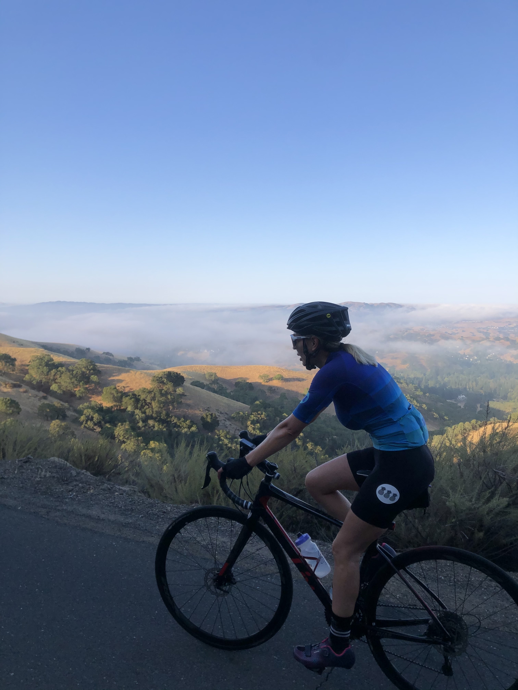
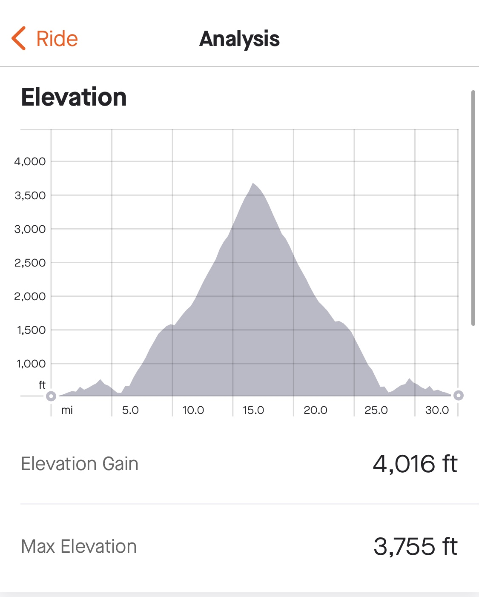

July 6, 2020



Mt. Diablo
Devil Mountain known as Mt. Diablo is one of the 3 highest peaks in the East Bay. The other two being Mt. Hamilton and Mt. Tam. Mt.Diable is 24.4 miles out and back with an elavation gain of 3,580 ft. It was one of the hardest climbs I have done becuase it is long and steady all the way up. It was also one of the most satisfying days knowing I set a goal and completed it!
Elevation Metrics
At the summit!